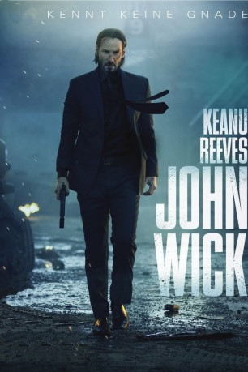

#99 John Wick
 gesehen am 09.03.2015
gesehen am 09.03.2015
 
 IMDB-Wertung: 7.3 / 10
IMDB-Wertung: 7.3 / 10  Metascore: 68
Metascore: 68 
John Wick genießt seinen frühen Ruhestand in der Vorstadt. Doch als seine Frau einer tödlichen Krankheit erliegt, verfällt er in Trauer. Nur sein Hund bleibt ihm noch als Gefährte. Als eines Tages jedoch drei russische Gangster in sein Haus einsteigen und seinen treuen Begleiter töten, holt ihn seine finstere Vergangenheit ein, war er doch früher der Top-Auftragskiller an der Ostküste. So tauscht er schließlich die Vorstadtidylle gegen jede Menge Feuerkraft und macht sich, auf Rache sinnend, auf die Suche nach den Einbrechern. Einer von ihnen ist Iosef Tarasov, der Sohn des einflussreichen Verbrecherbosses Viggo Tarasov, für den Wick selbst einmal gearbeitet hatte. Doch für Freundschaft ist kein Platz in dem Rachefeldzug und so hat er bald auch den ehemaligen Kollegen Marcus an seinen Fersen hängen...
Jahr: 2014
Dauer: 101 Minuten
FSK: 16
Land: USA Studio: Summit EntertainmentTonspuren: DD5.1 - ,
Untertitel:
Auflösung: 1080p (1920×800) Größe: 7168 MB
Genre: Action, Thriller, Krimi
Regisseur: Chad Stahelski, David Leitch
Drehbuch: Derek Kolstad
Soundtrack: Tyler Bates, Joel J. Richard
Darsteller:
 Keanu Reeves als John Wick
Keanu Reeves als John Wick Michael Nyqvist als Viggo Tarasov
Michael Nyqvist als Viggo Tarasov Alfie Allen als Iosef Tarasov
Alfie Allen als Iosef Tarasov Willem Dafoe als Marcus
Willem Dafoe als Marcus Dean Winters als Avi
Dean Winters als Avi Adrianne Palicki als Ms. Perkins
Adrianne Palicki als Ms. Perkins- Omer Barnea als Gregori
- Toby Leonard Moore als Victor
 Daniel Bernhardt als Kirill
Daniel Bernhardt als Kirill Bridget Moynahan als Helen
Bridget Moynahan als Helen John Leguizamo als Aurelio
John Leguizamo als Aurelio Ian McShane als Winston
Ian McShane als Winston- Bridget Regan als Addy
 Lance Reddick als Hotel Manager / Charon
Lance Reddick als Hotel Manager / Charon Keith Jardine als Kuzma
Keith Jardine als Kuzma Tait Fletcher als Nicholai
Tait Fletcher als Nicholai- Kazy Tauginas als Ivan
- Thomas Sadoski als Jimmy
 Randall Duk Kim als Continental Doctor
Randall Duk Kim als Continental Doctor David Patrick Kelly als Charlie
David Patrick Kelly als Charlie Clarke Peters als Harry
Clarke Peters als Harry Kevin Nash als Francis
Kevin Nash als Francis Gameela Wright als Delivery Woman
Gameela Wright als Delivery Woman- Vladislav Koulikov als Pavel
- Munro M. Bonnell als Priest
- Patricia Squire als Elderly Woman
- Vladimir Troitsky als Team Leader
- Joseph K. Bevilacqua als Man on Bus Reading the New York Times , uncredited
- Carolyn Blair als Red Circle Club Goer , uncredited
- William Andrew Brewer als Tattooed Security Guard , uncredited
- Kenneth Carrella als Red Circle Security , uncredited
- Chris Chasey als Guy in the Club , uncredited
- Tim Falter als Assassin , uncredited
 Thayr Harris als Red Circle Security , uncredited
Thayr Harris als Red Circle Security , uncredited- Nadia Kay als Hot Girl , uncredited
- Natalia Kiriya als Red Circle Model , uncredited
- Christopher Kolling als Red Circle Club Goer , uncredited
 Ilan Krigsfeld als Bathhouse Thug , uncredited
Ilan Krigsfeld als Bathhouse Thug , uncredited- Mack Kuhr als Sniper #1 , uncredited
- Luke Lesko als Luke , uncredited
- Erik Martin als Russian Thug , uncredited
- Meghan Mazurczyk als Bath House Model , uncredited
- Yana Milanberg als Nightclub Dancer , uncredited
- Julian Mileta als Club Promoter , uncredited
 Roman Mitichyan als Red Circle Security , uncredited
Roman Mitichyan als Red Circle Security , uncredited Inna Muratova als Girl in the Club , uncredited
Inna Muratova als Girl in the Club , uncredited- Karen Nazarov als Red Circle Club Dancer , uncredited
 Joseph Oliveira als Yuri , uncredited
Joseph Oliveira als Yuri , uncredited- Andrew Paterini als Red Circle Club Goer , uncredited
 Charles Pendelton als Doorman , uncredited
Charles Pendelton als Doorman , uncredited
Datei: X:\FSK18-Collections\John Wick\John Wick (2014, FSK16, 1920x800).mkv seit 03.02.2015
Festplatte: FSK18
 Alle Filme aus Gruppe 'FSK18-Collections\John Wick'
Alle Filme aus Gruppe 'FSK18-Collections\John Wick'